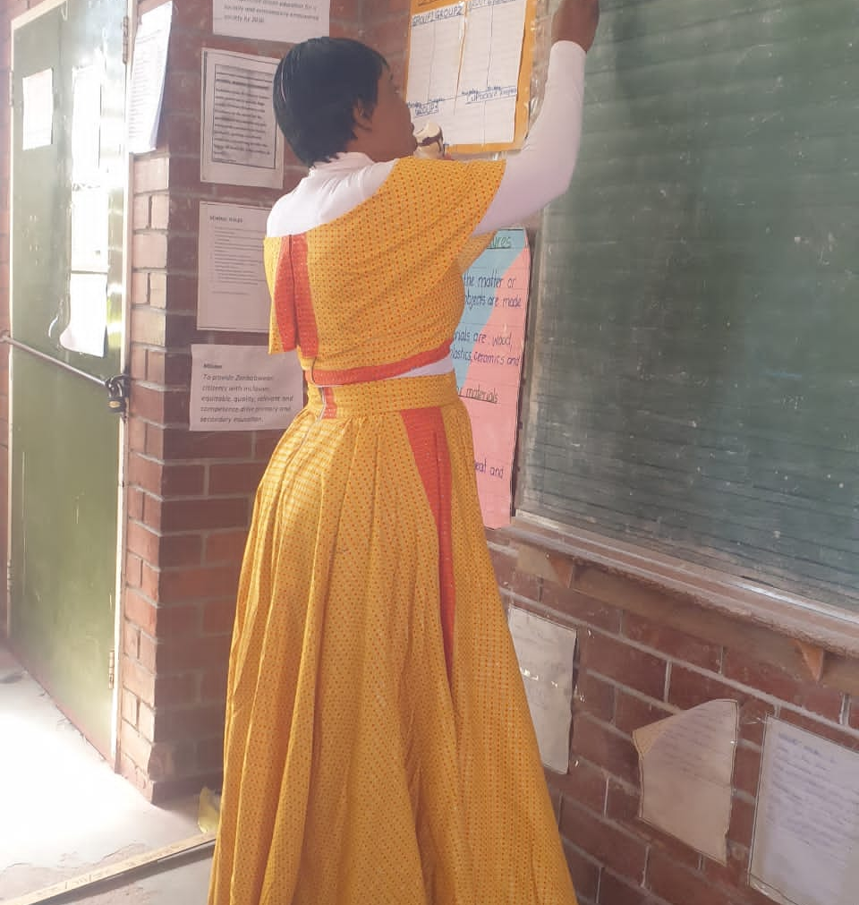

Student Teacher | Seke Teachers’ College | Passionate About Inclusive Education
I am a dedicated and enthusiastic student teacher from Seke Teachers' College with a strong belief in inclusive, engaging, and learner-centered education. I completed my teaching practice at Budirirai Primary School, where I developed classroom management and communication skills through active interaction with diverse learners.
Thank you for visiting my portfolio. I am passionate about building an inclusive learning environment that nurtures creativity and growth. I welcome opportunities to contribute to institutions that share the same values.
Email: kachere.aquino@gmail.com
Phone: +263